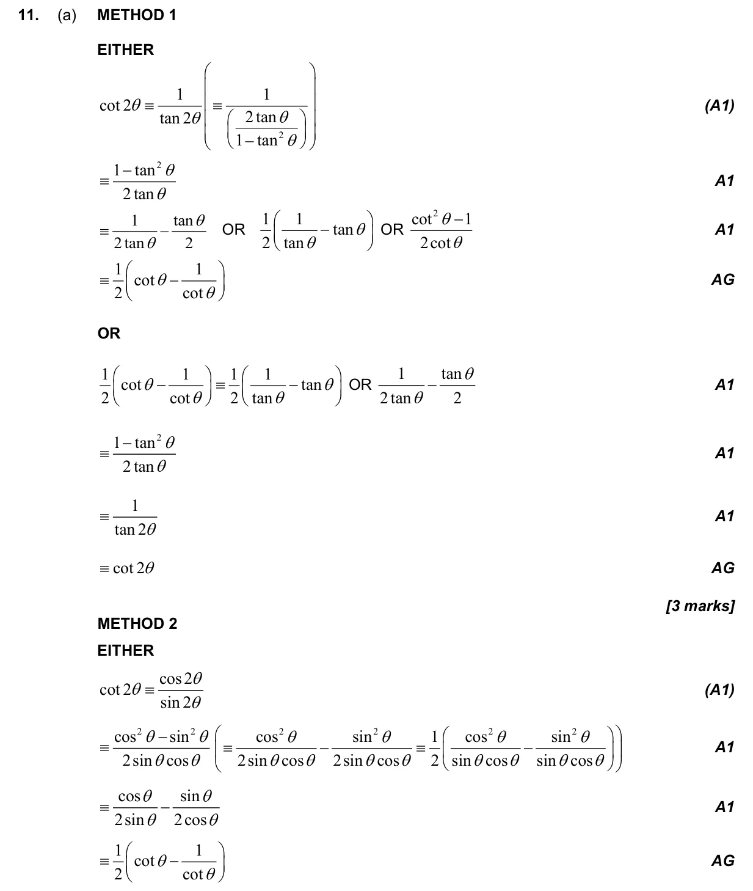
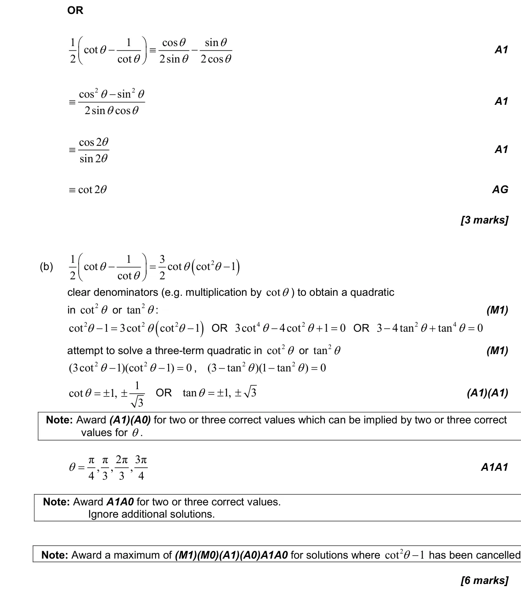
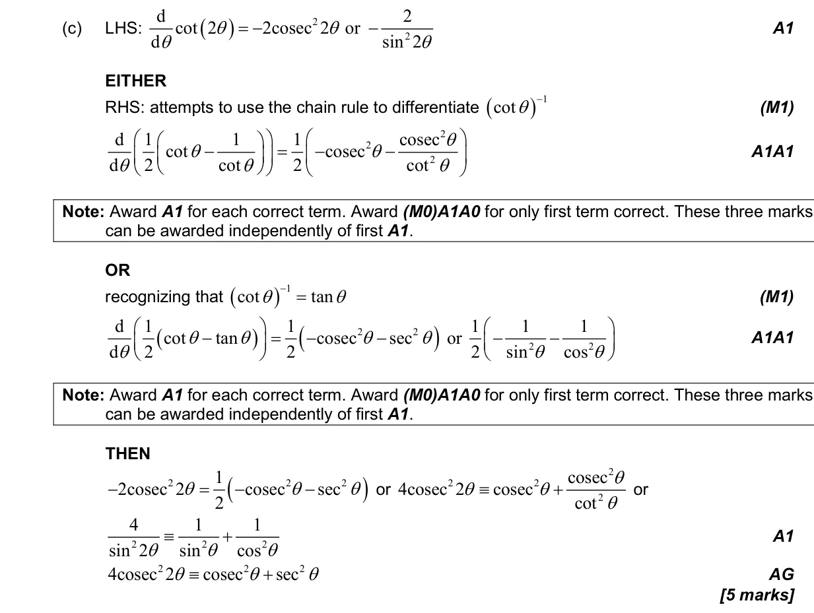
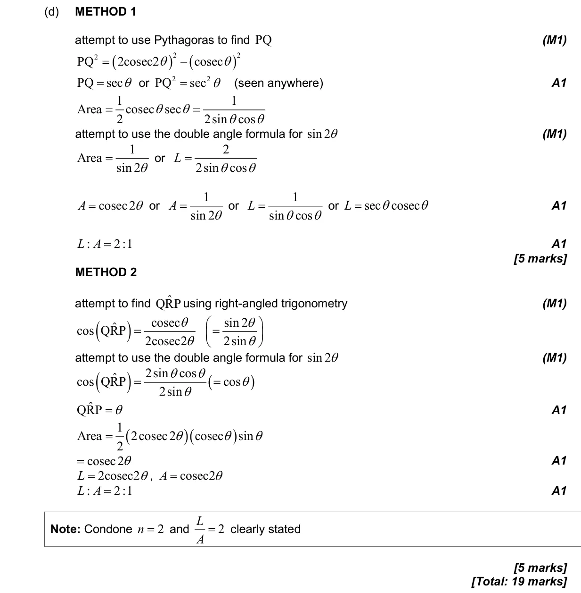

3.9 Reciprocal trigonometric ratios, Pythagorean identities and inverse trigonometric functions3.8 Solving trigonometric equations5.15 Further standard derivatives and integrals3.6 Pythagorean identity and double angles3.10 Compound angle identities
Question

Markscheme



